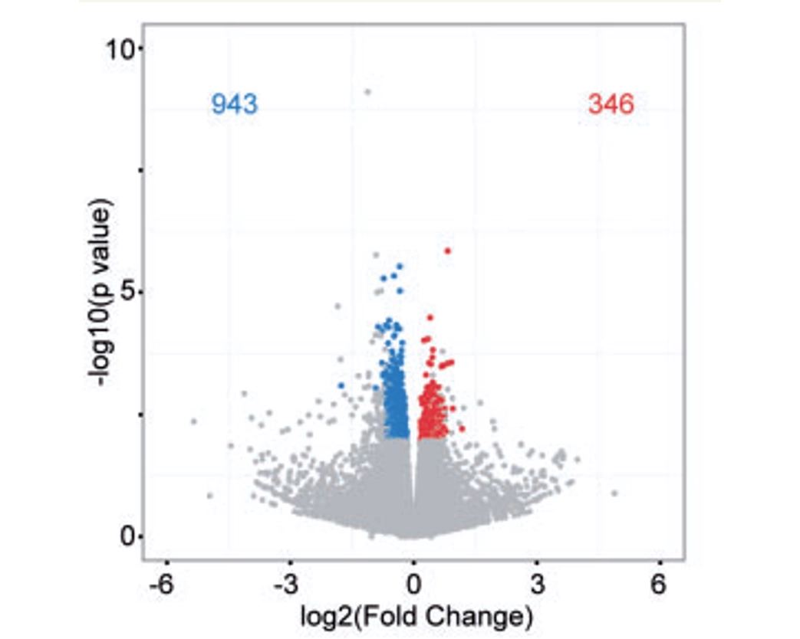
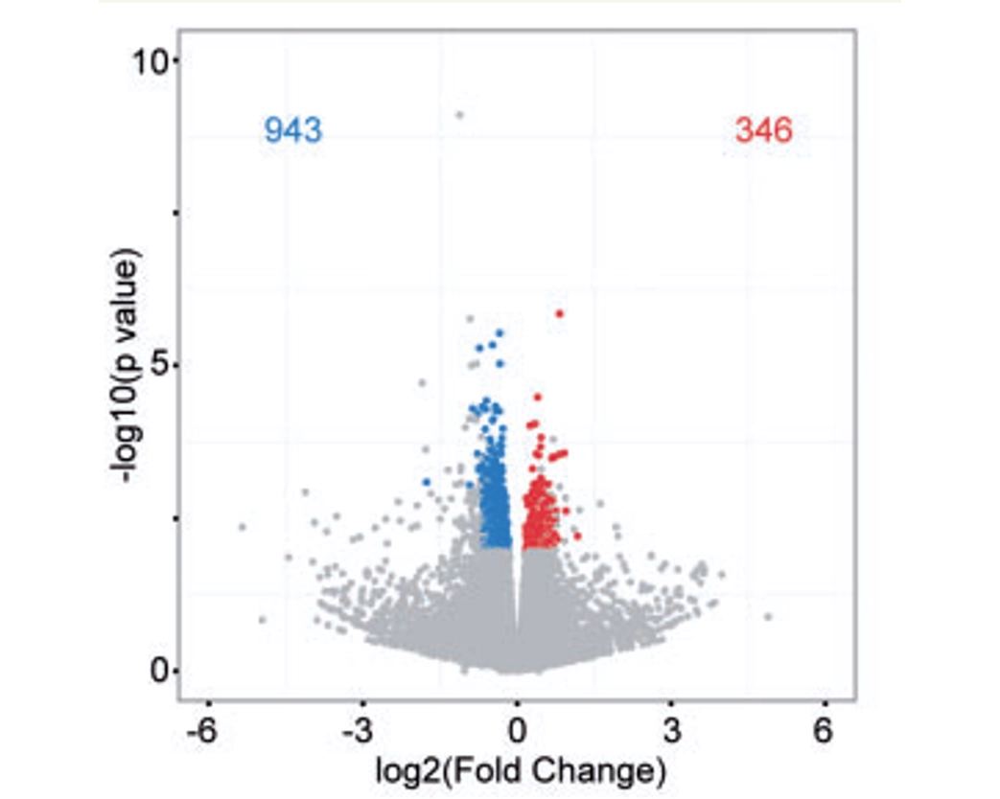

Portfolio
Big Data
This is an exciting project. The goal is to understand structural changes in motor neurons during progression of motor neuron disease. To do this I have reconstructed 3D images of motor neurons from flat, serial images of spinal cord taken on an electron microscope. From these reconstructions I then trained an AI model to identify important structures in each neuron. I am now analysing the data to measure any change, such as size, abundance or even alteration in interaction between two different structures.
In the images and video shown here the structures identified are mitochondria (green), membrane (pink) and abnormal accumulations of proteins and lipids (purple) which may be contributing to disease. If you want to know more about motor neuron disease and mitochondria, also check out my neuroscience project here.
Neuroscience
 

The stand-out feature of this project is that this new model motor neuron disease was designed to carry a disease-causing genetic mutation that also acted as a disease-specific beacon. By developing in parallel a reagent, called an antibody, that detected the ‘disease beacon’, I was able to analyse disease processes at an unprecedented level of specificity.
I was able to identify that certain proteins are not in their normal locations in motor neurons during disease. Through analysis of the function of all genes in this model I was also able to show that quite a few genes associated with essential functions of neurons are altered. What was particularly interesting is that the proteins that were not in their normal location, were accumulating in areas that are important for these essential functions to occur – suggesting that they may in fact be contributing to this disruption of essential function.
If you want to know more about motor neuron disease, please watch the great informational video from Nature video. If you want to read my published research paper on this model, you can get to it here.

Genome Engineering
This was an incredibly difficult and demanding project. I had to dig deep and really push my development as a genome engineer to get this one done. The goal was to develop a way of seamlessly replacing mammalian genes with their human equivalent - to enable a step-change in the way we model human disease and develop treatments. It was a success and several genes have now been ‘humanised’ as a result.
Getting this technology to work was one of my proudest achievements as a scientist. If you want to read the published paper on it, you can get it here.
As an interesting end note, the illustration above was drawn for me by my wife while I was doing my PhD – many years before I took on this project! Beautifully prophetic? Or did she unwittingly influence my later decisions?
Front End
This project really explains itself, as right now you are on the website I developed for it! This portfolio website was developed to showcase my two complementary roles is a Neuroscientist and Full Stack Developer.
The focus of the website is to highlight my wide range of experience. It communicates the details of each project in a visually interesting and easy to understand way to make the information accessible to those without technical expertise in these areas.
For its development I’ve used HTML, CSS, GenAI, Figma, Balsamic and much more. If you want more detail on its development, you can check it out on my Github here.